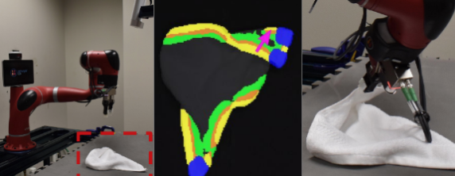
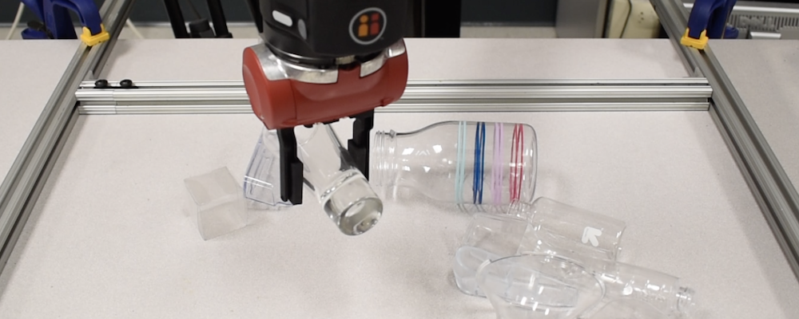
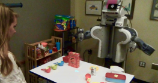
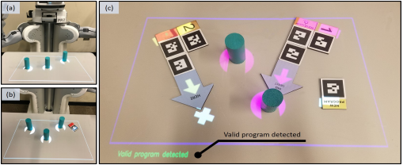
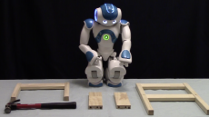
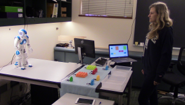

Hi, I am a PhD student with Prof. Dave Held at the CMU Robotics Institute. I am interested in research applying learning to robotic perception and manipulation.
Prior to starting a PhD, I worked on human-robot interaction with Prof. Maya Cakmak at UW and Prof. Brian Scassellati at Yale.
[CV] [Google Scholar] [Github] [Twitter]
Contact: tweng (at) andrew.cmu.edu
Recent News
- Paper accepted to IROS 2020! Cloth Region Segmentation for Robust Grasp Selection.
- Paper accepted to RA-L + ICRA 2020! Multi-modal Transfer Learning for Grasping Transparent and Reflective Objects.
- Honored to receive the 2019 NSF Graduate Research Fellowship!
Recent Blog Posts
Publications
|  | Cloth Region Segmentation for Robust Grasp Selection International Conference on Intelligent Robots and Systems (IROS), 2020
|
|  | Multi-modal Transfer Learning for Grasping Transparent and Specular Objects Robotics and Automation Letters (RA-L) with presentation at the International Conference of Robotics and Automation (ICRA), 2020
|
|  | Robot Object Referencing through Legible Situated Projections 2019 International Conference on Robotics and Automation (ICRA)
|
|  | RobotIST: Interactive Situated Tangible Robot Programming Proceedings of the Symposium on Spatial User Interaction 2018
|
|  | Modeling communicative behaviors for object references in human-robot interaction 2016 IEEE International Conference on Robotics and Automation (ICRA)
|
|  | Robot nonverbal behavior improves task performance in difficult collaborations 2016 11th ACM/IEEE International Conference on Human-Robot Interaction (HRI)
|